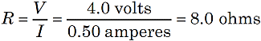
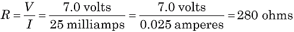

Figure 1. A voltage V dropping across a resistor R in a circuit with a current I.
|
Figure 1. A voltage V dropping across a resistor R in a circuit with a current I. |
In the early 1800's, George Ohm discovered a mathematical relationship for electric circuits with simple resistors. With a circuit having a current I (in amperes), the voltage (V, in volts) dropped across a resistance (R, in ohms) is V = I x R. This relationship often appears three ways:


We can use the third form above to find a resistor's value. Suppose a meter measures the "voltage drop" across the resistor as V = 4.0 volts, and the current in the circuit is I = 0.5 amperes. Then the resistance is:

Notice the units: 1 ohm is defined as 1 volt per ampere.
You must be careful working with the units. Voltage is often given in millivolts (1/1,000 volt). Current is often given in milliamps (1/1,000 ampere) or even microamps (1/1,000,000 ampere). Suppose you measure 7.0 volts across a resistor with a current of 25 milliamps. Then the resistance is:
